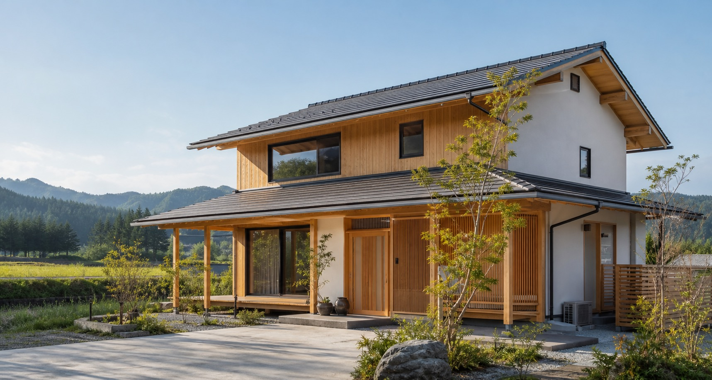
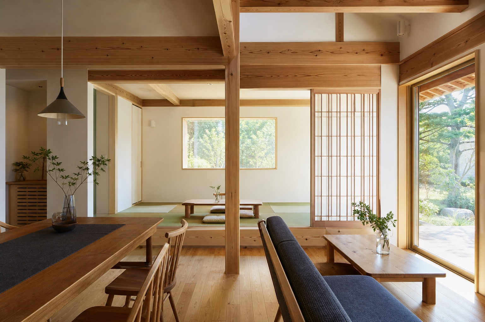
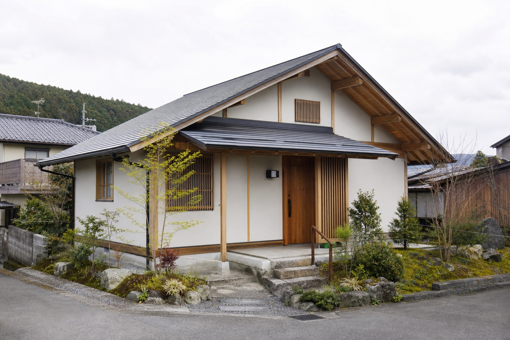
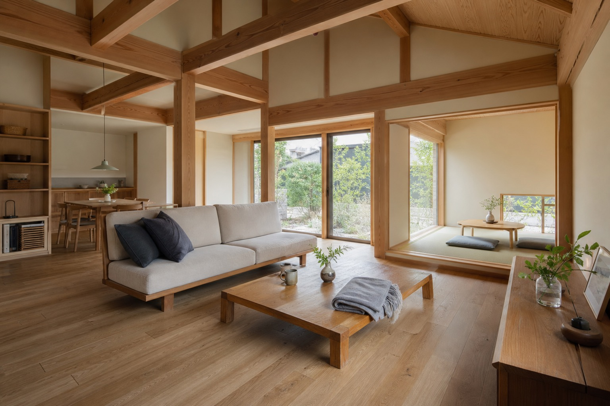
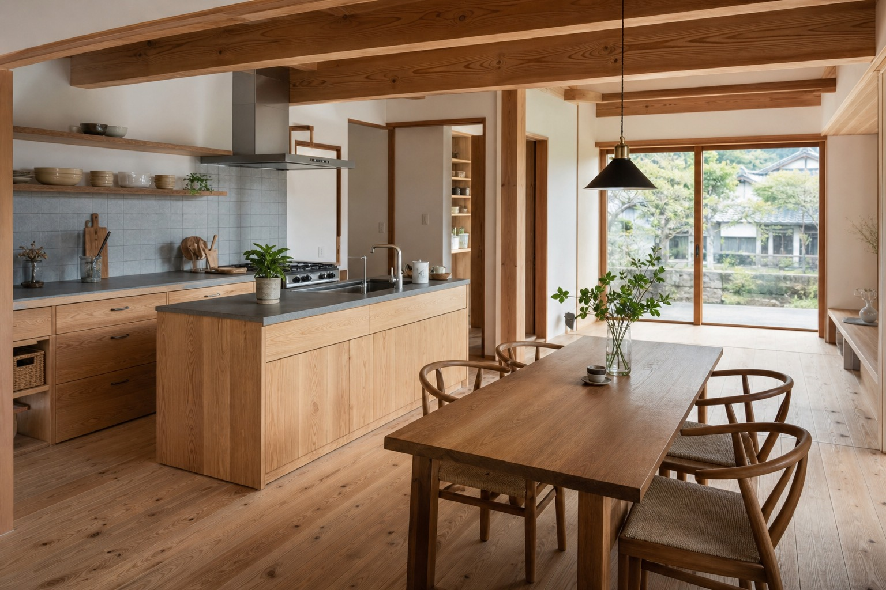

住宅建築
住宅建築の設計、管理、施工等。基礎工事を含む家づくりの工程を確認。
このページは営業提案用サンプルです。公式サイトではありません。

仮画像MARUMORI / MIYAGI KOMUTEN
昭和16年設立。新築からリフォーム、差しもの建築まで、住まいの相談を地域で受け止める工務店です。
CONCEPT
既存サイトでは、建方、基礎、外壁、防蟻・防腐、造作収納など、施工途中の記録が多く紹介されています。完成写真だけでなく、家を支える過程を見せていることが伊藤工務店らしさです。
このサンプルでは、その誠実な現場感を、建築雑誌のような余白と写真の見せ方で整理しました。

仮画像SERVICE
住宅建築の設計、管理、施工等。基礎工事を含む家づくりの工程を確認。
住まいの修繕、改修、暮らしに合わせた手入れ。詳細範囲は要確認。
造作収納や木部まわりなど、職人仕事が伝わる相談領域として整理。
REASON
長く地域で事業を続けてきた工務店として、沿革を信頼の軸に。
一級建築士、建築施工管理技士、土木施工管理技士などの資格掲載を整理。
既存サイトで確認できるZEH関連情報は、性能相談の入口として配置。
Facebook、Instagram、ブログの導線を、現場の見える安心感につなげます。
WORKS / JOURNAL
既存サイトでは丸森、白石、福島などの施工日記や実績カテゴリを確認。ここでは案件名を新規作成せず、掲載傾向だけを整理しています。

仮画像
仮画像
仮画像COMPANY
CONTACT
フォームは営業提案用の見本です。実際の公開時には、既存のGoogleフォームまたは公式問い合わせ導線へ接続してください。
このフォームは営業提案用サンプルです。実際には送信されません。